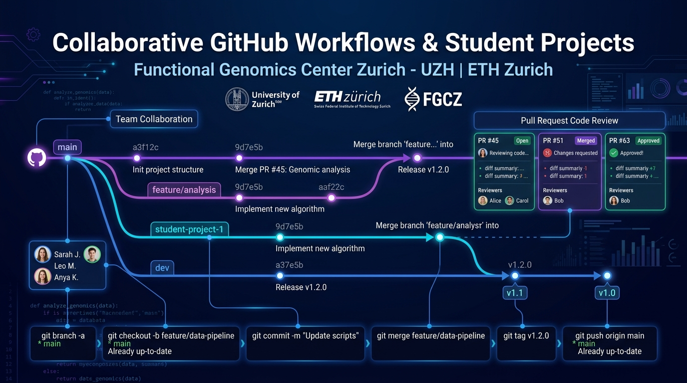

Collaborative GitHub Workflows for Group Projects
Team Development, Pull Requests, Code Reviews & End-of-Course Archival Strategies
Why GitHub for Scientific Teamwork?
A Single Source of Truth
No more emailing zip files (analysis_v2_final_FINAL.zip). The repository contains the complete history, environment specifications, and current code state.
Parallel Division of Labor
Student A implements the data pre-processing, Student B builds the statistical test, and Student C creates the visualization simultaneously without overwriting each other.
Peer Review & Quality Gates
Before code enters the master branch, team members review the diff, test the functionality, and suggest fixes directly on GitHub lines of code.
Research Project Repository Structure
1. The Self-Explaining README
Must include: Research question, dataset citation, installation instructions, and how to execute the main pipeline in 1 command.
2. Data Storage Policy
GitHub has a strict 100MB file limit. Students must document external data links (Zenodo, GEO, PRIDE) in data/README.md.
3. Deterministic Environments
Lock package versions with environment.yml or requirements.txt so all teammates and the instructor can run the code.
The Feature Branch Lifecycle
git checkout -b feat/qc
Create an isolated branch off the latest main.
git commit -m "Add PCA"
Make small, logical commits with clear messages.
gh pr create
Open a PR on GitHub; tag teammates as reviewers.
Merge & Delete Branch
Merge only after at least 1 teammate approves!
main branch must always remain in a working, deployable state. Never push half-baked, broken code directly to main.
Pairing AI Agents with Git Workflows
How AI Agents Assist Git:
- ✓ Autonomous Branch Management: You can ask the agent: "Checkout a new branch `feat/volcano-plot` and implement the visualization."
- ✓ Clean Diffs & Commits: Agents can inspect `git status`, stage files, and write descriptive commit messages following Conventional Commits.
- ✓ Drafting PR Summaries: The agent can summarize the diff into a markdown changelog ready to paste into GitHub.
Human Review Safeguards:
- ⚠ Review Before Merging: Teammates must review the agent's diff. Never let an AI merge directly into `main` unverified.
- ⚠ Watch for Accidental File Addition: Ensure the agent hasn't accidentally staged huge cache files or `.DS_Store`.
- ⚠ Automated CI Tests: Configure GitHub Actions to run unit tests automatically whenever a PR is opened.
Archiving & Branching for Future Years
1. Immutable Git Release Tags
When the submission deadline arrives, lock the exact state with a lightweight or annotated Git tag:
git push origin hs26-final
2. Cohort Reference Branches
Create a permanent branch to preserve the year's work, enabling you to reset `main` for next year's template:
git push origin cohort/hs2026
3. GitHub Native Repo Archival
In Settings ➔ Danger Zone ➔ Archive Repository. Converts the repo into read-only mode: all issues, PRs, and commits are permanently preserved without risk of tampering.
4. The "Hall of Fame" Benchmark
Select the top 2 project repos and showcase them as anonymized reference benchmarks for next year's students to study as gold standards.
Instructor Archival Workflow (CLI Steps)
git tag -a hs26-final -m "Final evaluated code for HS2026"
git push origin hs26-final
git push origin cohort/hs2026-final
git push origin main --force-with-lease
Group Project Evaluation Checklist
Grading Criteria:
- ☑ Branching Discipline: Were features built on separate branches and merged via PRs?
- ☑ Peer Code Reviews: Did team members leave thoughtful review comments on each other's code?
- ☑ Clean Commit History: Are commit messages descriptive and atomic?
- ☑ Reproducibility: Can the instructor run the pipeline from the README in 1 command?
FGCZ Life Sciences Impact:
By mastering GitHub collaboration alongside AI agentic tools, students gain the exact skills required by leading computational biology labs, biotechnology start-ups, and academic consortia worldwide.